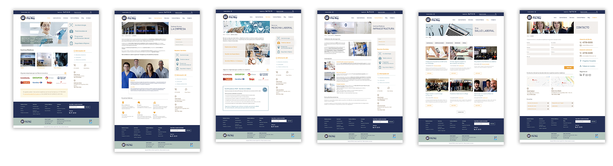
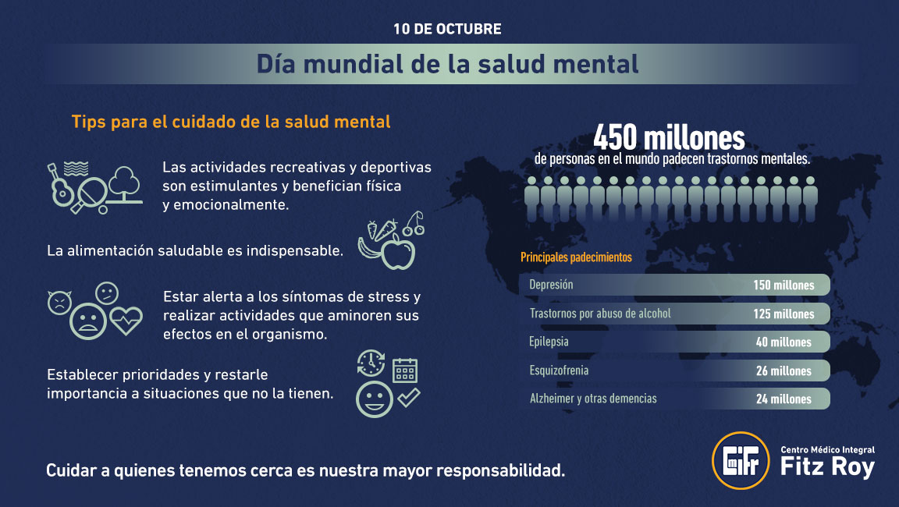
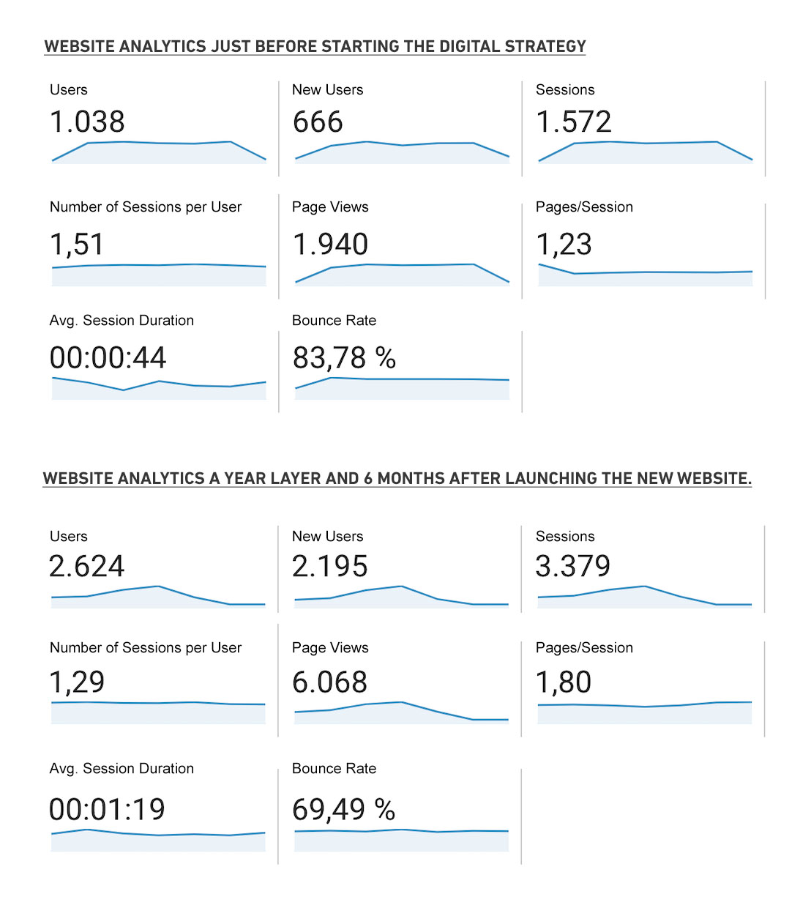

Centro Médico Integral Fitz Roy (CMIFR)
CMIFR is a medical center specialized in occupational medicine and work accidents. They are an industry leader due to their range of services, infrastructure, and innovation.
They continuously seek to update their services to current trends and develop new businesses units to focus on improving health in the workplace.
The Business Problem
CMIFR main problems were misinformation on their website, unavailable content on mobile, lack of visibility on other channels, including search engines and social media. These issues didn't reflect the company's high-quality services resulting in an overload call center with repeated inquiries and lost business opportunities.
My role in the project
I created a digital strategy and assembled a team to work on the problems presented by the client. I worked on the visual design, user experience, and front-end for every aspect of the strategy.
The Approach
I began the project by doing analysis and research to create a digital strategy for the brand.
Due to budget constraints, I couldn't perform user interviews for research. Instead, I analyzed what the users were saying on social media and reviews on the company. I examined the most recurrent inquiries registered in the call center to understand the user's pain points.
The user's primary search for information:
- Preparation for medical studies and procedures.
- Visiting hours information.
- The services provided by the clinic.
- Uploading resumes for future job openings.
Corporate clients main requests:
- Delivery time for medical studies.
- Information on how the different centers are run.
- The infrastructure of the clinic centers.
- Outsourced services.
- Range of services, medical studies, and medical specialties provided by the clinic.
- Absence management, house visits from doctors, doctor's office attention.
Website analysis
Then, I analyze the company website.
I found usability problems like, ambiguous navigation, misleading site structure, unclear content, inadequate use of animation, broken forms, page layouts not suited for reading the information, and unoptimized code, which could explain the lack of presence in search results.
Competitive Analysis
For last, I performed a competitive analysis of the main competitor's websites using the following parameters:
- General Design: How do they apply images, colors, visual treatment, and fonts to convey their brand message?
- Content: What is the brand message and how they communicate it?
- Information Architecture: How is their content structured?
- Tasks: What tasks can be done on the website?
- Highlight Feature: Do they have any stand-out feature?
- Social Media: How is their presence on Social Media?
The conclusion of the analysis showed only a few competitors with strong features. These competitors had good content and a structure that communicated accordingly. Only one competitor showed a strong visual presence. On the other hand, there wasn't one competitor that outdo in both parameters nor offered more capability than CMIFR. This, presented an opportunity for CMIFR to step up to be the leader.
After I analyzed the complete information, I decided to implement a content-based strategy instead of a traditional marketing strategy due to the company's clear lead over its competitors.
Although this approach seems slower at first, it has better results to create a more positive relationship with users and to position the brand as an expert.
The Process
I defined the goals for the strategy based on the business problems and the research. I didn't set specific numbers to achieve as the digital strategy was something new to the company. My idea was to use the first strategy as a base and increase the complexity later on. The main goals were:
Branding
Boost awareness about the brand, its services, and its features through digital channels.
Search Engines
Get on the first pages of the search results through SEM and SEO.
Web Traffic
Get more traffic to the corporate website.
Social Media
Expand connections and improve engagement on Linkedin and Facebook.
Leads
Convert traffic into commercial leads.
Contacts
Create a contact database to develop regular and specific communications with the audiences.
I also define some key performance indicators on each goals to measure progress.
Audience
Using the information from research, I differentiate the needs and goals of the users interacting with the CMIFR. Their two primary audiences are corporate customers and end-users.
I then grouped this data into stages accordingly to the circumstances of the user touchpoint and developed the information and features needed for users to achieve each stage's goals.
Awareness
- Information about CMIFR, services, infrastructure, medical team.
- Inspirational stories about patients, brand videos.
- Social media actions, newsletters.
- Google Adwords.
Consideration
- Information about plans services details to clarify the remaining uncertainties.
- CMIFR value proposition and differentials.
- Certifications.
- Content on specializations.
Decision
- Contracting benefits.
- Email and landing page actions.
- Hiring process.
- Online platform demo.
- Surveys and reviews as a key to fidelization.
Understanding these stages and goals was vital to create a good user experience and increase business opportunities.
Corporate website
From the stages and goals, I outlined the content structure to develop with the client and built a new information architecture for the corporate website. I linked information between sections to create the necessary user flows created as stages.
While the client developed the content, I started working on the website's visual design.
The brand had a brand style guide, but it needed a refresh. I took the general colors and fonts but introduced some variations to have a modern design style.
I used the primary colors, which are also complementary, and created tone variations from each to replace the secondary palette of bright colors. I also added a lot of white space to the design, which resulted in a more moderate and cleaner style to represent the brand values.
I design high fidelity prototypes for the homepage to establish a general look and feel and page layout.
I presented three different layouts with variations on the navigation and prioritizing different goals. I use these first drafts to get feedback and approval on one concept before moving on to the complete website.
Presenting directly on high fidelity prototypes helped the client visualize what the complete website could be and reduced approval times significantly.
Once we decided to go with one concept, I design the rest website using the design pattern that fitted the content we developed. I also created the experience for mobile, adapting the design to achieve the user's goals.
Front-end
With the final design approved, I started coding the website. I used Bootstrap 4 due to their improved flexbox code. Also, using the framework's JS components, I was able to avoid installing multiple external libraries, reducing load time, and improving performance.
I put special attention to the code's semantics to make it friendly with accessibility guidelines and search engine optimization, leaving the website ready for further work on these areas in the future.
Social media
Another pillar of the strategy was the content for social media. This was a great way to show the company's vision of health in the workplace and give useful information to the users.
I develop an editorial calendar along with a copywriter from my team. We included topics like health, nutritional tips, news, and achievement from the clinic, workshops, inspirational stories from patients, details of the services, celebrations day cards.
The content was upload to the company's blog and posted on social media as a way to generate more traffic and interest to the website.



The Results
The users responded very well to the website and the content proposal we made over time.
Clients learned in more depth the services of the clinic. This way, I was able to reduce the primary pain points and improved the overall experience of interacting with CMIFR.
Measuring Success
In six months, the number of followers on social media and visitors on the website duplicated organically. These actions generated new business opportunities for the clinic.
The project was successful in reaching our primary goals. It will be important to keep updating content, analyzing metrics, and run some usability testing to collect feedback and iterate on the strategy.
